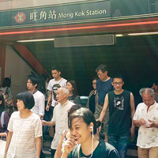
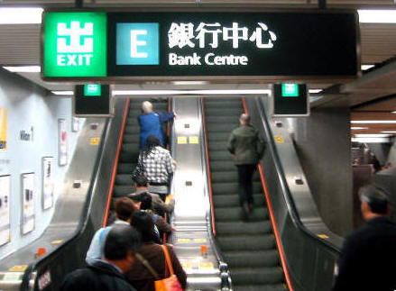

How to Get to Ladies' Market from Mongkok MTR
The Mong Kok MTR station is the closest to the market, but is a medium sized station with multiple exits so it is possible to become confused when you leave. There are many streets in Mongkok that basically look very similar, so getting lost is not at all difficult.
All MTR exits are labeled and signed using letters and numbers, so you can easily find your way to a particular exit if you know for example that Exit "A1" is the one that you want. But as the Ladies' Market is a long stretch of road running parallel to the station, you can still get there by more than one exit.
Generally the Bank Center or E2 exit is recommended as it is the simplest route once you have reached street level, but others including D3 have their own advantages.
Option 1 - E2 - Bank Center
- Alight from the train when you arrive at Mong Kong MTR station
- Take the escalator up to the concourse
- Follow signs for exit E
- Beep out of the station using your Octopus or single use ticket
- Take the pictured escalator up at Exit E - Bank Centre
- At the top, turn towards E2 and walk up the stairs. This is not an accessible exit.
- At street level walk forward, directly away from the station.
- After 90 meters you will be at the junction with Tong Choi Street
- You have arrived at Ladies' Market!
You are inside the market at this point, and if you turn left towards Argyle there is one block of market. But turn right towards Dundas Street and there about three blocks of the market.
Option 2 - D3 - Metropark Hotel
- Alight from the train when you arrive at Mong Kong MTR station
- Take the escalator up to the concourse
- Follow signs for Exit D - Metropark hotel
- Beep out of the station using your Octopus or single use ticket
- Use the escalator to go up, then follow signs for D3
- When you arrive at street level turn immediately around 180 degrees
- Walk forward to the main road, Argyle Street
- Turn right into Argyle Street
- Walk to the first turning on the right (Note the historic round cornered building on the corner)
- You have reached the beginning of the Ladies' Market
This route means you arrive at the north end of the Market, or the beginning if you prefer to think of it like that. Then a whole market is in front of you all the way down to Dundas Street!
Option 3 - A1 - Accessible exit
If you need accessible exit then your only choice is A1.